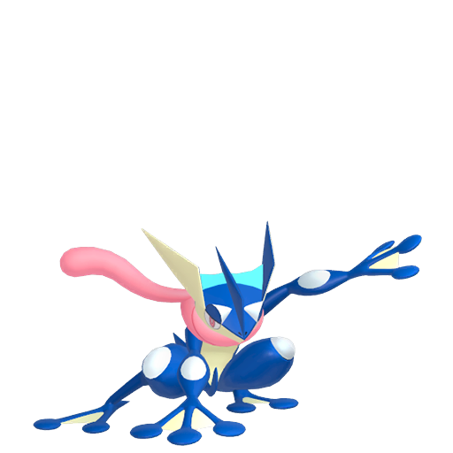

Victor's Portfolio
Hi my name is Victor Zapata III, and this is my portfolio.
About me:
I was born in New York City, where I have lived in my whole life. I really love living in a New York City thanks to the opportunities the city offers.
My history with my career started young when I was interested with architecture. Living in New York City where I can see many skyscaper, including the raising of the new World Trade Center builidng I was hook. Seeing the different and unique styles was fasinating to me. However, I saw this as a hobby not really as a career path I would love. So the other thing I really loved to do was math. Ever since Pre-K all the way up to now, math has been my favorite subject and not only did I succeed in it, but I loved doing it. The interesting ways to solve each problem had me hook. Having the choice how to solve a problem and getting the result you get was amazing. However, I notice there not a specific career I could pick that will allow me to do math in the way I love to do it.
It wasn't until High School I figure out the career path I know I will equally love and enjoy. When I took my AP Computer Science A course in my Junior year of High School. The course was focus around the coding language Java. Which prior to doing the class I played the game Minecraft. In the game I would make maps where it would require me to use in-game support to make these maps come to life. This eventually led me to modifying the game.
Since the verison of Minecraft I was playing was Java based, a lot of commands, and when moding I would need to code using Java. So from my exposure with Minecraft I was able to understand the class and have the necessary problem solving skills that let me breeze thought the class. Which at the end of actual AP test I said I had fun, and I got a 5 on the exam.
Ever since I took the class I been hooked and determine to follow a career path of Computer Science. I even loved the final project which was to make a side scrolling game and we made a simple 2D plane, including AI.
So now I am going to Pace University and majoring in Computer Science, and I join this program to help my skills in CS and gain more experience with working with the career that I have a lot of passion and love to do.
Projects:
Minecraft Map Projects
Five Nights at Freddy's Multiplayer Map

This map is based on the popular game series Five Nights at Freddy's by Scott Cawthon. This map is a playable and multiplayer verison of the first game of the series. This is actually my third time remaking the map, where changes I made included updated textures, AI animatronics, and better usage of command block and redstone (which included the game making, and in-game support)
Castle Wars 2.0

Mini-game maps where there two teams who spend time collecting gems and trade it with villagers to get items for battle and conquer the enemy's castle by destroying the other team beacon and defeating all the other team. This game originally came from a popular Minecraft Mini-Game that played on multiplayer servers called Bed Wars where it a similar concept. I made the map, to make the game using in-game minecraft tools, and not addition plugin. Many of the complicated things include the gem generators, where gems spawn on these generators and the players are allow to be upgraded to faster rates of spawning. The map also includes custom Villager mob, which they allow to have a trade interface which can be completely customize using commands, and their AI can be disabled by commands.
Minecraft Mods
Custom Weapons Mod
This project is my longest project. This project original started as a texture pack, where I made different sword, axes and tools and applied them over original items in Minecraft. Then because I was adding way too much items, I switch to making it into a mod. Where I could add in the weapon as legitimate items in the game. Also include other custom items and custom crafting weapons to make my items obtainable in survival mode. It included custom ore generation so any blocks I made to get ores to make the weapons actually spawn in the ground around the world. Currently this project on a break from last summer.
Coding Projects
AP Computer Science Final Project


This project was originally suppose to be a side scrolling game, however me and my partner decided against that and made a game where you can select different characters, and battle in a 2D plan, where enemies have basic AI and move around the map. Battles in the game were represented in a Rock, Paper, Scissor system and was shown by basic animation. Some of the things I contributed was making the title screen, character select screen, controls in both of these screen, I also included methods to make the screen full screen automatic and close by it self, which weren't included in the starter code. I also made the 2D animations, and helped with how the AI logic worked. As well as other small things.
Some of things I enjoy doing, is playing games, and building legos. I actually really good at building legos that 1000+ piece set I can finish in about 5 hours, given no interuptions and I'm focus. I enjoy looking at New York City skyline. In terms of Lego set I have a small New York City skyline set, which includes Empire State Building, Statue of Liberty, Crystaler Building, Flatiron Building and One World Trade Center, and in addition to that bigger lego models of the Empire State Building and Statue of Liberty. I also generally like model building. I have a plastic model of One World Trade Center in my room and when I was younger I had a paper model of the original and new World Trade Center.
Below is a link to github.
https://github.com/FunAverage57/
Below is just random images of stuff I like or I feel like explain what I am into
This is Greninja, one of my favorite Pokemon.
This is my older cat Peanut, he passed away March 2020.
This is my younger cat Chocolate, he loves a lot of attention, and this is an adorable picture of him.
This is a picture of the before mention Lego Statue of Liberty model, along with the Lego New York City Skyline set.
This is a picture of my Nintendo Switch, I spend way too much money to get those joy con colors, which blue and green are my favorite and second favorite colors. Also something is wrong with the image, see if you notice it.
This is a painting done for one of my classes of downtown Manhattan skyline.